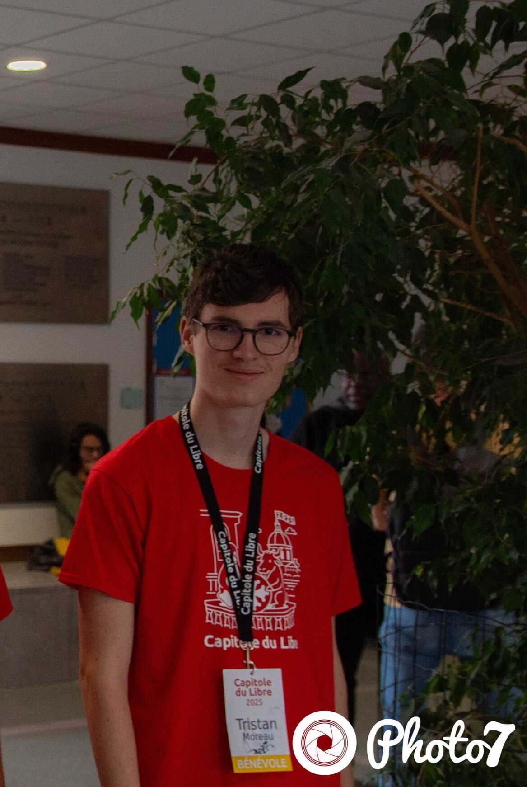
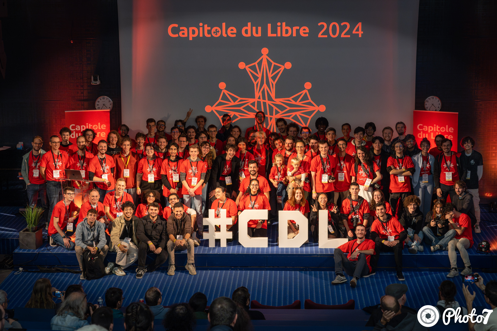

J'ai participé en tant que bénévole à l'événement Capitole du Libre qui se déroulait à l'ENSEEIHT à Toulouse en octobre 2024 et 2025. C'est un événement majeur dédié au Logiciel Libre. Cette expérience m'a permis de contribuer à l'organisation de l'événement et de m'immerger dans la communauté Open Source française.

